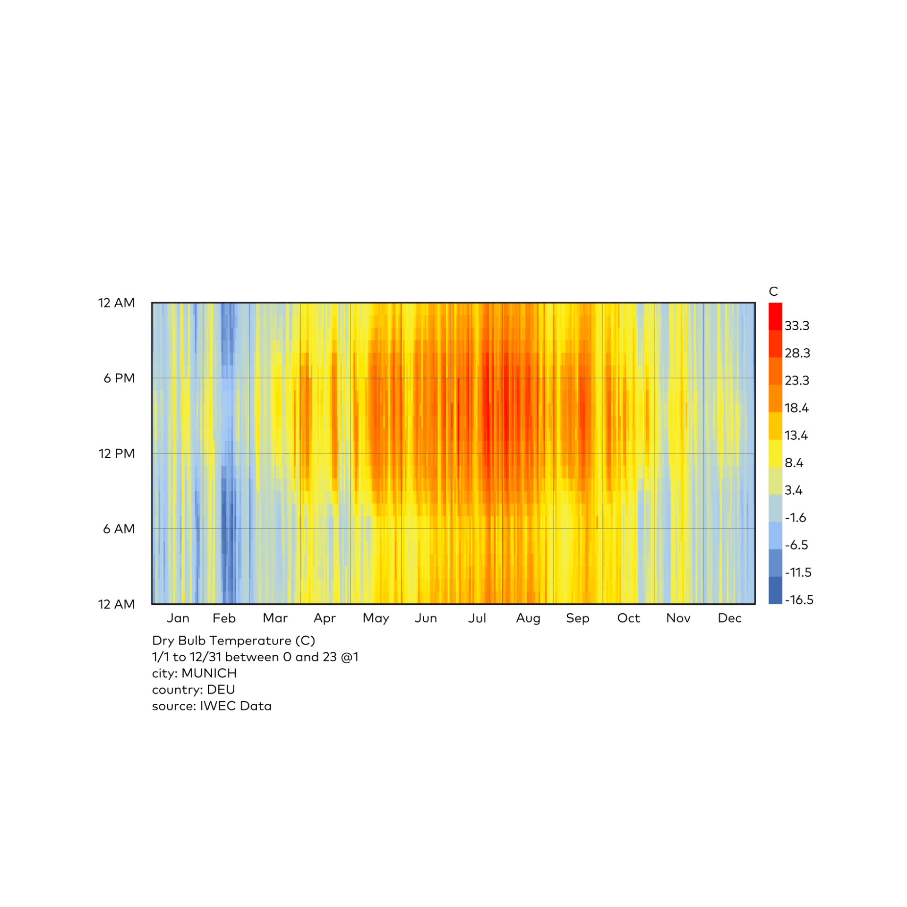
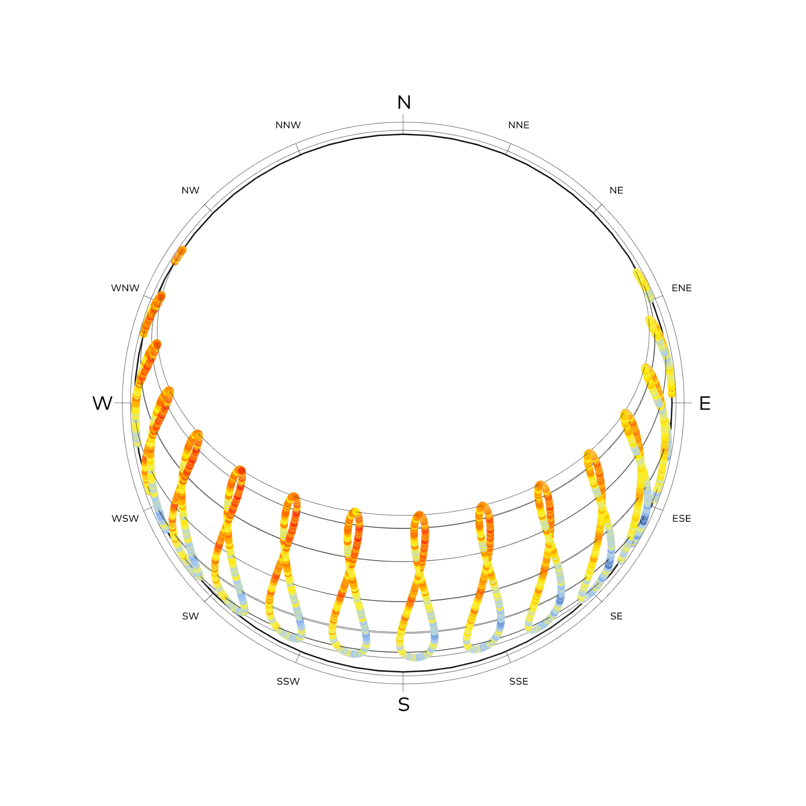
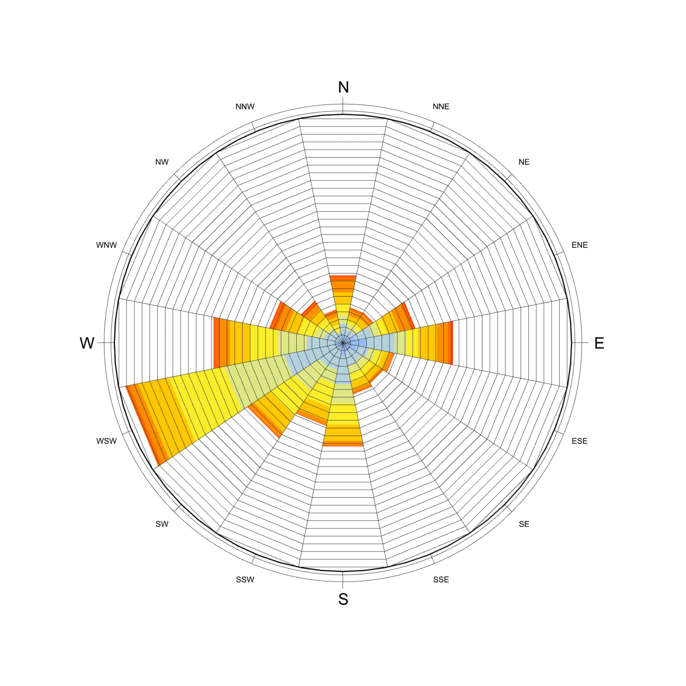

Klimadaten
Ladybug
⬤ Mit Ladybug lassen sich Wetterdaten präzise visualisieren – von Sonneneinfall über Windverhältnisse bis zur thermischen Behaglichkeit. 2D- und 3D-Diagramme machen Klimaeinflüsse auf den Entwurf unmittelbar erfahrbar. Psychrometrische und bioklimatische Charts zeigen Optimierungspotenziale auf, während Sun-Path- und Wind-Rosen datengestützte, klimagerechte Architekturentscheidungen von der Konzeptphase an ermöglichen.
⬤ Ladybug allows you to visualize weather data precisely – from sunlight exposure and wind conditions to thermal comfort. 2D and 3D diagrams make climate influences on the design immediately apparent. Psychrometric and bioclimatic charts reveal potential for optimization, while sun path and wind rose diagrams enable data-driven, climate-friendly architectural decisions from the concept phase onwards.